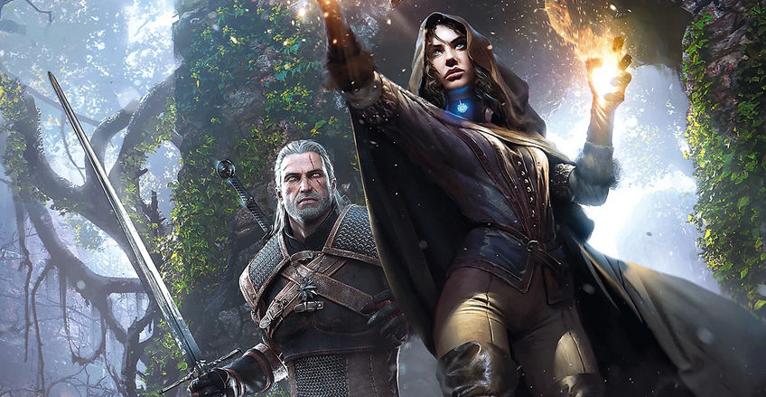

Une nouvelle surprise attend les fans de The Witcher en décembre ! L'auteur Andrzej Sapkowski réserve un retour dans l'univers de Geralt qui promet d'enchanter. Outre une série et des jeux vidéo, The Witcher est avant tout une série de romans. Certains fans ne jurent d’ailleurs que par eux, un peu comme pour la saga Harry Potter. Dans tous les cas, il y a de quoi être heureux avec une belle surprise prévue pour le mois de décembre.
Une nouvelle histoire The Witcher
Les fans de The Witcher vont avoir une belle surprise pour les fêtes : Andrzej Sapkowski, l’auteur de la célèbre saga, vient de confirmer la sortie d’un tout nouveau livre pour début décembre. Ce prochain opus, qui sortira plus de dix ans après le dernier livre, suscite déjà une forte excitation dans la communauté. Lors de l’événement Igrzyska Wolności, Sapkowski a dévoilé que son livre devrait arriver dans les toutes premières semaines de décembre, juste à temps pour faire un cadeau idéal aux amateurs de fantasy. Si Sapkowski a confirmé la date approximative, le titre du livre reste mystérieux. Pour l’instant, l’éditeur impose un embargo sur ce point "pour des raisons marketing. " De quoi alimenter l’attente et faire spéculer les fans. L’auteur a seulement précisé que le livre serait disponible en librairie début décembre, sans plus de détails.. 